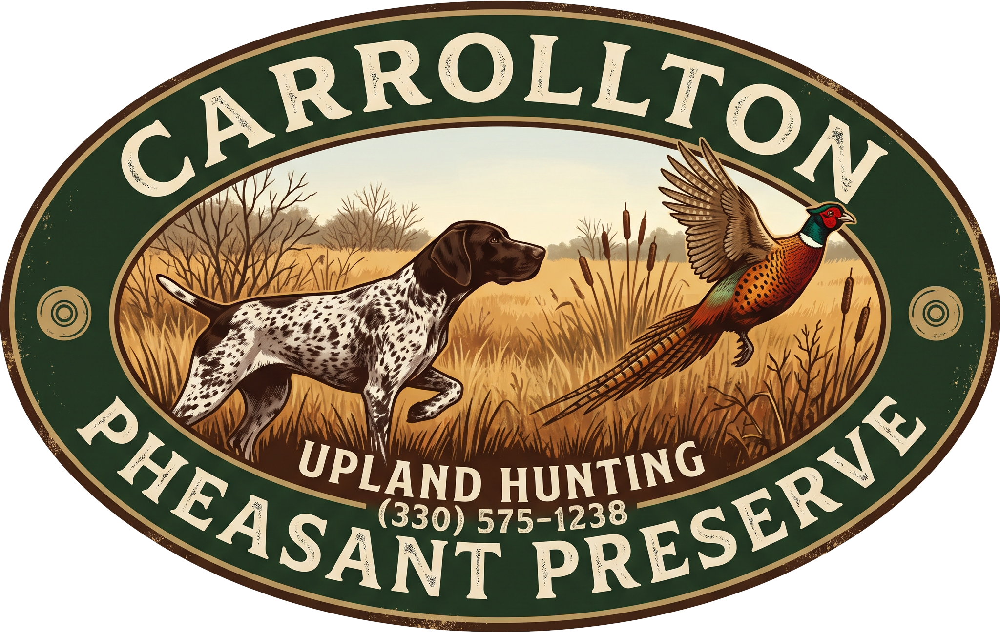
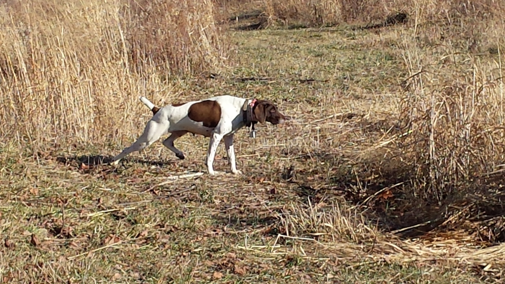
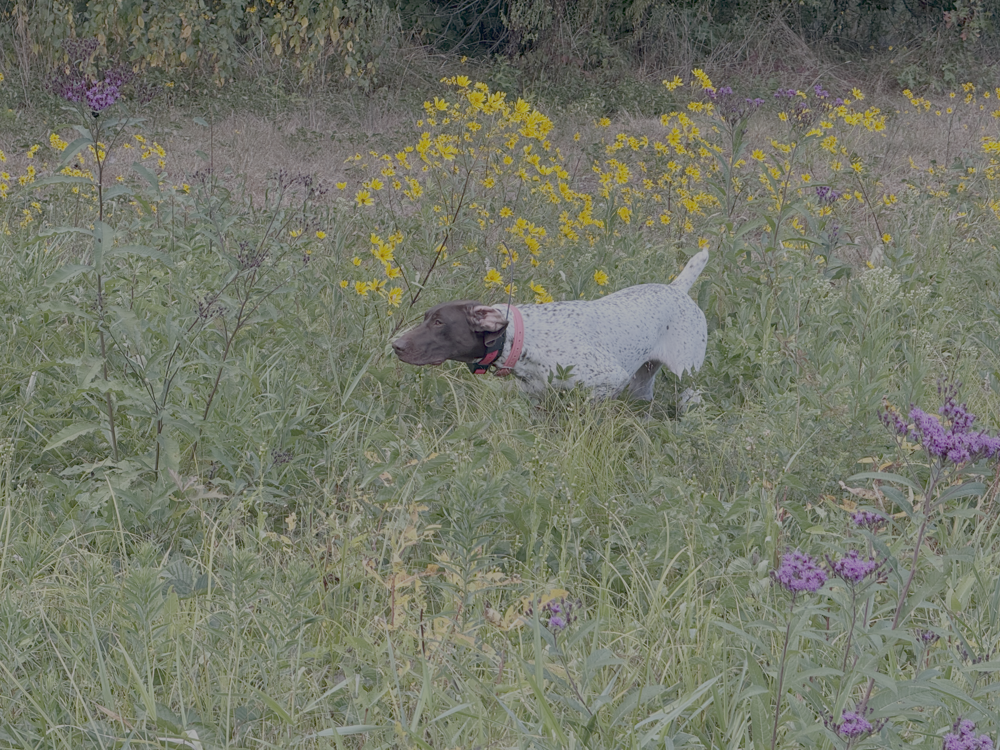

Pheasant and Upland Hunting
Enjoy the anticipation, the cover, and the flush. Spend the day chasing upland birds through our 180+ acre preserve.

Explore European tower, guided, or self-guided upland bird hunts in Carroll County, Ohio
Plan a Hunt See the ActionWhether you're a seasoned upland hunter or introducing someone to the sport, the best days are about more than the birds. They're about watching a dog work, sharing the walk, and enjoying time outside.
Located in the Carrollton area of Carroll County, Ohio, Carrollton Pheasant Preserve is a place to focus on the field, the dogs, and the experience. Reach out to ask about current pheasant hunting opportunities, availability, and planning your visit.

Enjoy the anticipation, the cover, and the flush. Spend the day chasing upland birds through our 180+ acre preserve.
Make it a day with friends and family, share the field, and build the kind of memories that last well beyond the season.
There’s nothing quite like watching a bird dog use its nose, work the cover, and the hard flushing cackle of a rooster bring the whole hunt to life.
A little field time says more than words can. Take a look at the dogs, the cover, and the action.
A good pheasant hunt starts before the first bird gets up. It's the walk into the cover, watching a bird dog pick up scent, and being ready when a rooster breaks into the air. At Carrollton Pheasant Preserve in Carroll County, Ohio, the point is to enjoy the hunt and the people you share it with. Whether you have years of upland hunting behind you or you're looking into your first preserve hunt, a quick phone call is the best way to find out what opportunities fit your group.

There is more than one way to enjoy a day at Carrollton Pheasant Preserve. Choose a European tower hunt, a self-guided hunt, a guided hunt, or a combination that suits your group.
Experience a different style of upland bird shooting with a European tower hunt. Most European Tower hunts start off with the thrill and challenge of high-flying birds over head and finish with an afternoon of hunting with our experienced guides and their bird dogs.
Our experienced guides take pride in providing an outstanding upland hunting experience alongside their highly trained bird dogs. Their dedication, expertise, and passion for the sport make every hunt memorable. Because guiding services are available at no additional charge gratuities are greatly appreciated and encouraged as a way to recognize the hard work of our guides and their exceptional dogs.
Prefer to work the cover with your own hunting party? Self-guided hunts are available, and you are welcome to bring your own hunting dogs. Confirm field arrangements and any day-of requirements when booking.
Want to mix hunting formats? Ask about combining the experiences to create a day that works for your group and the birds available.
There's more to upland hunting here than pheasants. Carrollton Pheasant Preserve offers Pheasant, Chukar, Quail, and Hungarian Partridge, depending on bird availability. Let us know what you'd like to hunt when you call so we can discuss the current options.
A typical hunt is divided into two sessions with time for a lunch break in between. The hunt isn't boxed into a strict time slot: the goal is to enjoy the field until your party is ready to wrap up. Your group sets the pace rather than racing the clock.
New to preserve hunting? You don't need to have every detail figured out before reaching out. Tell the preserve about your group's experience and ask what options may be a good fit.
Questions About Hunting? Call UsHere are a few things worth knowing before planning your trip.
No. Guided hunts include preserve-provided guides and their hunting dogs.
The preserve offers pheasant, chukar, quail, and Hungarian partridge, depending on bird availability. Call to confirm which birds are available for your preferred date.
A typical hunt has two sessions with a lunch break. Hunts are not time-boxed; your party hunts at its own pace until it is ready to finish. Ask about the day's schedule and lunch arrangements when booking.
ABSOLUTELY! If this would be your first pheasant hunt, let the preserve know when you call. Ask about suitable opportunities, supervision, and any experience or safety requirements before booking.
Call with your expected number of hunters to ask what can be accommodated.
General suggestions include appropriate boots, weather-ready clothing, hunter orange, eye protection, and drinking water. Ask the preserve what equipment, firearms, ammunition, documents, and safety gear it specifically requires.
Call (330) 575-1238 to ask about available dates and the preserve's booking process. Reservations and payment requirements should be confirmed directly.
Carrollton Pheasant Preserve is in the Carrollton area of Carroll County in Northeastern Ohio. 3108 Sunflower Rd SW Carrollton, Oh 44615
Planning a pheasant hunt? Call to ask about available dates, hunt options, group sizes, and anything you need to know before visiting Carrollton Pheasant Preserve.
Give us a Call